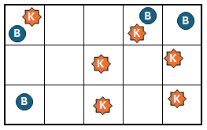
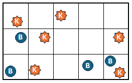
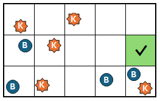
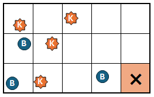
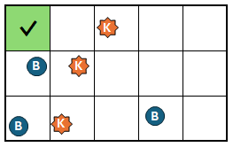
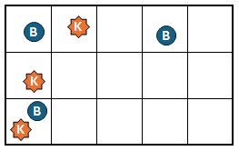

Description
Bu Dengklek is working in a laboratory to research the water quality of the Ciliwung River.
Bu Dengklek took a sample of water from the Ciliwung River and placed it on a glass board.
The glass board has a rectangular shape and consists of squares arranged in $N$ rows (numbered $1$ to $N$ from top to bottom) and $M$ columns (numbered $1$ to $M$ from left to right).
Interestingly, $N$ and $M$ are two distinct prime numbers
Let square $(r, c)$ denote the square at row $r$ and column $c$.
There are two types of microbes: microbe-K and microbe-B.
Initially, there is at least one microbe on the entire glass board.
It is also known that for each square, it is guaranteed that there are at most $1$ microbe-K and at most $1$ microbe-B.
It is also guaranteed that there is at least one square with no microbes at all.
Bu Dengklek would like to collect all microbes off the board.
However, Bu Dengklek doesn't know the configuration of microbes on the board.
Bu Dengklek can use her microscope to observe her board.
This observation results in a matrix $A$ of size $N \times M$ where each of its elements is either $0$ or $1$.
If $A_{i,j} = 0$, then there are no microbes at all on square $(i, j)$. If $A_{i,j} = 1$, then there is at least one microbe on square $(i, j)$.
Initially, Bu Dengklek is observing her glass board.
As long as there are still microbes on the glass board, Bu Dengklek can perform the following two types of operations:
-
AKSELERASI T (with $1 \leq T \leq 1000$) —
Bu Dengklek will accelerate the speed of all microbes for $T$ time units.
The following will happen:
-
Each microbe-K will move right one square at a time for $T$ times.
When a microbe at a rightmost square moves one square right, it will automatically move to the leftmost square on the same row during that one step.
-
Each microbe-B will move down one square at a time for $T$ times.
When a microbe at the bottommost square moves one square down, it will automatically move to the topmost square on the same column during that one step.
-
After all microbes finish moving, Bu Dengklek will use her microscope to observe the board.
-
EKSPERIMEN X Y (with $1 \leq X \leq N$ and $1 \leq Y \leq M$) —
Bu Dengklek examines the water sample on square $(X, Y)$ that must contain at least one microbe.
With this, Bu Dengklek will obtain the information about the number of microbes on square $(X, Y)$.
After that, all microbes on that square will be collected from the board.
Read the explanation of the sample interaction for more details.
Bu Dengklek must perform these operations in any order, until there are no microbes left on the glass board.
Because it takes quite a lot of time to perform AKSELERASI, Bu Dengklek can only perform AKSELERASI at most $1000$ times.
On the other hand, Bu Dengklek should not be careless in experiments.
An experiment is said to be successful if there is exactly $1$ microbe on the square being experimented, since if there are more than $1$ microbe, the microbial data may be mixed.
In the end, Bu Dengklek will be given a score depending on how accurate and efficient the operations she performed are, as will be explained in the scoring section.
Help Bu Dengklek get as high of a score as possible!
Constraints
- $2 \leq N, M \leq 23$
- $N$ and $M$ are two distinct prime numbers.
- Initially, there is at least one microbe.
- Initially, for each square, there are at most $1$ microbe-K and at most $1$ microbe-B.
- Initially, there is at least one square with no microbes at all.
Subtasks
-
(8 points) The initial configuration of the board looks as follows:

Note that this configuration is also used for the sample interaction below.
- (17 points) There is at least one row and at least one column with no microbes at all.
- (19 points) There is at least one column with no microbes at all.
- (30 points) There is a value $T$ such that an initial
AKSELERASI T makes every square contain at most $1$ microbe.
- (26 points) No additional constraints.
Problem Type Information
This is an "interactive" problem.
In this problem, you will interact with the judge's program through standard input (stdin) and standard output (stdout).
See the following interaction format carefully.
Interaction Format
In the beginning, you will be given $N$, $M$, and the initial board observation results $A$ in the following format:
N M
A1,1A1,2…A1,N
A2,1A2,2…A2,M
⋮ ⋱ ⋮
AN,1AN,2…AN,M
To perform an AKSELERASI operation for some value $T$ ($1 \leq T \leq 1000$), you can output to the standard output in the following format:
AKSELERASI T
For each of these outputs, the board observation results $A$ after this operation will be given from standard input in the following format:
A1,1A1,2…A1,N
A2,1A2,2…A2,M
⋮ ⋱ ⋮
AN,1AN,2…AN,M
To perform an EKSPERIMEN operation for some square $(X, Y)$ ($1 \leq X \leq N$; $1 \leq Y \leq M$) containing at least one microbe, you can output to the standard output in the following format:
EKSPERIMEN X Y
For each of these outputs, the experiment results will be given from the standard input in the following format:
Z
This means that there are $Z$ microbes on square $(X, Y)$.
As soon as there are no microbes on the board, the interaction between your program and the judge's program must be immediately terminated.
You must not terminate if there are still microbes on the board.
Scoring
Bu Dengklek calculates two scores, $\text{AKURASI}$ and $\text{EFISIENSI}$
-
$\text{AKURASI}$ denotes how accurately Bu Dengklek performed her experiments.
If $\text{SUKSES}$ denotes the the number of Bu Dengklek's experiments that are successful, and $\text{TOTAL}$ denotes the total number of microbes on the board initially, then $\text{AKURASI} = \left(\frac{\text{SUKSES}}{\text{TOTAL}}\right)^3 \times 100\%$
-
$\text{EFISIENSI}$ denotes how efficiently Bu Dengklek can use her time to perform as few
AKSELERASI operations as possible.
If $\text{ACC}$ denotes the number of AKSELERASI operations performed by Bu Dengklek, then the $\text{EFISIENSI}$ score is calculated according to the following table:
| Condition |
$\text{EFISIENSI}$ |
| $1000 < \text{ACC}$ |
$0\%$ |
| $9 < \text{ACC} \leq 1000$ |
$(100 - 5 \times \log_2(\text{ACC} - 8))\%$ |
| $\text{ACC} \leq 9$ |
$100\%$ |
Bu Dengklek's $\text{PERFORMA}$ score in the end is the product of these two scores: $\text{PERFORMA} = \text{AKURASI} \times \text{EFISIENSI}$.
For example, if Bu Dengklek has an $\text{AKURASI}$ score of $80\%$ and an $\text{EFISIENSI}$ score of $75\%$, then Bu Dengklek's $\text{PERFORMA}$ score is $80\% \times 75\% = 60\%$
For each test case, your program will be graded on its $\text{PERFORMA}$ score.
Each subtask consists of multiple test cases.
For each subtask, the smallest \text{PERFORMA}$ score will be considered for grading.
The points obtained from a subtask is the product of the smallest $\text{PERFORMA}$ score and the subtask's points.
The final score is the sum of the scores of all subtasks, which is then rounded down.
Your program may receive "Wrong Answer" or "Time Limit Exceeded" if it:
- performs
AKSELERASI for more than $1000$ times,
- produces an output in a wrong format or outside of the constraints,
- performs an experiment on a square with no microbes,
- does not perform the interaction according to the format, for example, not reading from the standard input immediately after performing an operation.
- does not output any more operations while there are still microbes on the board, or
- continues to output more operations while there are no more microbes on the board.
If a test case is successfully executed, you can see its detailed scoring in the submission page.
You can also see the scores of \text{AKURASI}$, $\text{EFISIENSI}$, and $\text{PERFORMA}$ for that test case.
The grader is not adaptive.
In other words, the configuration of microbes is set before the interaction begins.
Sample Interaction
The following is a possible sample interaction under a certain board configuration.
Note that the information about the board configuration is not known by your program and is only displayed to help you understand the sample interaction.
| Input |
Output |
Board Configuration |
3 5
10011
00101
10101
|
|
|
|
AKSELERASI 1 |
|
11001
10011
10010
|
|

|
|
AKSELERASI 1 |
|
10100
11001
11011
|
|

|
|
EKSPERIMEN 2 5 |
|
1 |
|

|
|
EKSPERIMEN 3 5 |
|
2 |
|

|
|
EKSPERIMEN 1 1 |
|
1 |
|

|
|
AKSELERASI 4 |
|
11010
10000
10000
|
|

|
|
EKSPERIMEN 3 1 |
|
2 |
|

|
|
AKSELERASI 1000 |
|
01000
10010
00000
|
|

|
|
EKSPERIMEN 1 2 |
|
1 |
|

|
|
EKSPERIMEN 2 4 |
|
1 |
|

|
|
EKSPERIMEN 2 1 |
|
2 |
|

|
| (end) |
(end) |
|
In the sample above, Bu Dengklek successfully performs $4$ successful experiments.
In total, there are $10$ microbes on the initial board.
Hence, Bu Dengklek's $\text{AKURASI}$ is $\left(\frac{4}{10}\right)^3 \times 100\% = 6.4\%$.
Bu Dengklek performs the AKSELERASI operation $4$ times.
To calculate $\text{EFISIENSI}$, it can be seen from the table that since the number of AKSELERASI operations does not exceed $9$, then her $\text{EFISIENSI}$ score is $100\%$.
In the end, Bu Dengklek's $\text{PERFORMA}$ score is the product of both, $\text{PERFORMA} = \text{AKURASI} \times \text{EFISIENSI} = 6.4\% \times 100\% = 6.4\%$.
Warning
Always flush after each output.
-
For
stdio.h(cstdio) library:
fflush(stdout);
-
For
iostream library:
std::cout << std::flush;